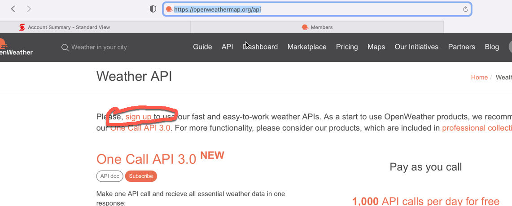

COMP 2406 - Winter 2025
Tut 07: RESTful API's and Express.js
© L.D. Nel 2025
Revisions will be noted here.
Description:
With this tutorial we introduce using RESTful API servers, or services. Many servers now provide an API (Application Programming Interface) that lets you query them for data rather than web pages. They provide JSON or XML data rather than providing an already rendered html webpage as a response. This is because many clients now have javascript that asynchronously updates page contents and thus query servers through their API expecting JSON data rather than a new html web page to load.
We also introduce an important new use-case: that of the server acting as a client of another server.
This tutorial has two parts. In part I we build a thin-client with just node.js and it's built in modules. In part II we build a thick-client using the express.js framework. A thin-client is expecting the server to fully render the html page for them; a thick client is expecting only data from the server and is intending on updating the client's webpage itself. An important point is to compare the two different styles. Both the style of a thick vs. thin client and also the style of an express.js app compared to the conventional node.js apps you have been building so far in the course.
Problem 4 of this tutorial is what Assignment 4 will be based on.
README FILE: All of your submissions in this course MUST include a README.txt. Your README.txt file is the first place the marking TA will look to evaluate your submission. If there is anything wrong with your README.txt file the marking stops and the grade is 0. Your README.txt MUST be complete and contain all of the following:
FILENAME and EXTENSION: The file name of your readme.txt file must start with the prefix "ReadMe" (not case sensitive) and the file must have an actual .txt extension. Other file extensions like .md, .html, .doc, etc., or no extension will not be accepted. The file contents must be plain text and not be in a markup language (e.g. html, or md, or xml) or a programming or scripting language. [0 marks for the submission if the filename, extension or format do not comply].
YOUR NAME, STUDENT NUMBER, and AFFIDAVIT: Your readme.txt file must contain the following affidavit statement followed by BOTH your name and student number. This is where you are identifying yourself and claiming to be the author of the work and the person who is to be credited for the work. [0 marks for submission if any of the three items are missing, incorrect, or incomplete].
Affidavit:
"I attest that I am the sole author of this submitted work and any code borrowed from other sources has been identified by comments placed in my submitted code.
YOUR_NAME, YOUR_STUDENT_NUMBER
"
INSTALL INSTRUCTIONS: Instructions on what actual commands to execute to install any external code modules needed to run your code. This will likely look like npm install or npm install module_name. It must be a legitimate command that the marking TA can copy-paste-and-execute. The marker will attempt to execute your commands from a command terminal open on the directory that contains your server file. [0 marks for the submission if a needed install command is missing, incorrect, or incomplete.]
LAUNCH INSTRUCTIONS: Instructions on what command to execute to launch your app. e.g. node server.js. As the course progresses there will be more launch options so it's important to provide the actual command. This must be a legitimate command that the marking TA can copy-paste-and-execute. The marker will attempt to execute your commands from a command terminal open on the directory that contains your server file. [0 marks for submission if the launch command is missing, incorrect, or incomplete.]
TESTING INSTRUCTIONS: (If relevant) provide the acual URL you want the TA to visit with their Chrome browser to test your server. For example:http://localhost:3000/mytest.html?name=Louis
Pay attention to any specific URL's that must be supported by your app but you must supply an initial one in your README.txt file. If your app requires a userid/password to run then provide one here for the TA to use. You must supply an actual URL here and not just say something like "see output of server console". [0 marks for submission if the URL is missing, incorrect, or incomplete.]
VIDEO DEMONSTRATION: Tutorials and the final term project assignment require that you post a YouTube video of you demonstrating your work. In those cases you must provide the YouTube link in your ReadMe.txt file. You WILL NOT need a demonstration video for the 4 term assignments. The video link must be a valid YouTube link and viewable (i.e. not private) at the time of grading. Videos must be a proper screen capture video with sound narration. Filming your laptop screen with your phone will not be accepted. [0 marks for submission if the YouTube video does not comply with these requirements.]
Along with the README.txt file you will submit your code which the TAs will run at their discretion following the instructions in your README.txt file. You, however, will demonstrate your code with your YouTube video.
Submit a single .zip file with all your contents to Brightspace. Zip is the only compression format we will accept. Brightspace should allow you to resubmit your file up until the due time and will only keep the most recent submission. Tutorial grade is 0,1, or 2 as follows:
| Mark | Tutorial Grading |
|---|---|
0marks |
Incomplete submission. Mark is 0 if any of the following are true:.
|
1mark |
Only some requirements met or demonstrated. Mark is only 1 if any of the following are true:.
|
2marks |
All requirements met and demonstrated in accompanying video for required problems. Does not include problems labelled as "Optional" |
Part I: Node.js-based Thin Client:
The demo code for this tutorial will not work until you insert your own API_KEY in server code.You can sign up for an openweather.org API key at: https://openweathermap.org/appid
Here are some screen captures of what it looked like when I created an account and signed up for an API key:


Open the the demo_code_nodejs_thin_client folder and run the server server.js found there. To test the server open a browser to http://localhost:3000. You should see a browser application that looks like the following. (The demo code will not work until you insert your own API_KEY in server code.) ALSO: it can take some time (maybe a couple of hours) for you API_KEY to become active in the openweather database.

Type "Ottawa" into the textfield and click the Get Weather button. Initially I got an invalid key response because openweather can take some time (maybe an hour or so) to recognize your key:

Eventually it did recognize my key (I think I restarted the server also). You should see the current weather conditions for Ottawa as a result. (Go ahead and try other cities as well.)

Open the server server.js code in your favourite code editor and examine the code.
Observe the following:
1) The code uses, or requires, the querystring built-in node module to help parse the query parameters in the POST request.
2) The server code makes an HTTP GET request to another server hosted by api.openweathermap.org. That is, the server is acting as an HTTP client of another server. This is done in the following function:
function getWeather(city, res) {
//Make an HTTP GET request to the openweathermap API
//options object needed for http request to API server
let options = {
host: 'api.openweathermap.org',
path: '/data/2.5/weather?q=' + city +
'&appid=' + API_KEY
}
//create the actual http request and set up
//its handlers
http.request(options, function(apiResponse) {
let weatherData = ''
apiResponse.on('data', function(chunk) {
weatherData += chunk
})
apiResponse.on('end', function() {
sendResponse(weatherData, res)
})
}).end() //important to end the request
//to actually send the message
}
Notice this function accesses another server on the internet through its API. Notice also that the code is required to provide an app ID key. Many API's have sprung up over recent years and recently most now require that you sign up and use an app id key they provide when accessing their services. Some of the free keys limit the amount of access you have to their API service.
Notice this function does a http (GET) request to the weather server and then provides its own client with the JSON data that the weather API server returns.
Study the entire code for our weather server and then proceed with the tutorial problems 1 and 2.
Here is an explanation of how the above request works.
The request function of the http module allows our server to send http requests to other http servers and we don't need any external modules to do this. To make a request you must create a configuration, or options, object and provide a callback function to the request function which is called when the response to the http request comes arrives. The generic form of the request looks like this (phrased with arrow functions instead):
const options = {...}
http.request(options, (apiResponse) =>{
let body = ''
apiResponse.on('data', (chunk) => {body += chunk})
apiResponse.on('end', ()=> {
console.log(body) //we are done
})
}).end() //important to end the request
//to actually send the request
You can find more on this on the node.js documentation website: https://nodejs.org/dist/latest-v16.x/docs/api/http.html#httprequestoptions-callback
By the way, there was a popular request npm module that used to make all this a bit easier but it was recently DEPRECATED.
Problem 1)
Notice our demo code implements a thin client. That is, the client is expecting the server to render the html pages. Notice also that the server serves HTML content to the browser, not by reading a file but, by constructing an html web page that consists of html tags merged with the data obtained from the weather service. This idea of combining html with data is called "template rendering" and there are "template engines" like Handlebars, PUG etc. made to help with this. We won't concern ouselves with those here though -we will look at them later in the course.
Notice that the server effectively serves an html form to the client which is set up to send an HTTP POST request when the user clicks the Get Weather button, or hits the ENTER key.
Also notice the form data is made accessible as a javascript object by using the querystring module to parse the query data.
For this problem we want to allow the user to use a GET request as well by, for example, accessing http://localhost:3000/?city=Ottawa using the browser address bar. This should provide the server response as before but with the weather data for Ottawa included:
To do this you need to add a new route (if-statement) in the server that detects a GET request and then uses the querystring module to parse the data to obtain the city. Use the existing code for clues on how to do this. Read up on how to use the querystring module if necessary. Basically the querystring module's parse method turns the query parameters (items specified with the ?city=Ottawa syntax in a URL) into a javascript object that lets you access the parameters with syntax like object.city for example. You can read more about querystring in the node.js API documentation here: https://nodejs.org/dist/latest-v16.x/docs/api/querystring.html
With this completed you should be able to query the weather by either typing a city name in the text field or by using the browser URL address bar directly.
Problem 2)
For this problem we want you to display the city name as part of the "Weather Info" heading in the web page. That is, in the sendResponse() function of the server we want you to include the name of the city so the user sees the following in their browser:

Part II: Express.js-based Thick Client:
The demo code will not work until you insert your own API_KEY in server code.You can sign up for an openweather.org API key at: https://openweathermap.org/appid
Part II is based on the demo code in demo_code_expressjs_thick_client folder. In this case it is an express.js based version of the weather server. Again you will have to add your openweather.org API key to get the code to work.
You should familiarize yourself with the online express.js documentation at https://expressjs.com Especially the "Getting Started" section including the "Basic Routing" subsection.
Problem 3)
To run the express-based demo you first need to install the express.js npm modules and other helper modules we are using, like request. The required modules are specified in the dependencies section of the package.json file. To install those modules run the command
npm install
from the directory where your code is located. This will install the npm modules and create a node_modules directory containing the installed modules. It will also create a package-lock.json file which you can ignore for the purposes of this tutrorial. (FYI: the package-lock.json file provides a snapshot of exactly what was installed in the node_modules directory folder so that later you, or us, can install those exact modules, or have another development team member install the exact same modules you are using.)
Study the express-based demo code. Run the code by exectuing node server.js and verify that it works with your weather API key:

Alternatively you can view the raw JSON weather data for a city specified as a query parameter in the browser address bar:

Or if you have the JSON Formatter extension plugin installed in Chrome (Here is a link to it but you must visit it from the Chrome browser link) you can see the data displayed more neatly with indentation:
Problem 4)
This problem will form the basis for assignment 4.
Apple's iTunes provides an API which you can query data about music, movies etc. The following http request typed in a browser will provide the first two items it found for music tracks whose title are 'Body And Soul'. Notice in the URL the multiword title requires plus signs instead of blanks. Give the following a try with your browser:
https://itunes.apple.com/search?term=Body+And+Soul&entity=musicTrack&limit=3
Notice it uses https:// and not http://.
When I try that with my browser it actually downloads a text file with the three song results in it. You can read more about the iTunes API at the following link but more details are not required at this point: https://developer.apple.com/library/archive/documentation/AudioVideo/Conceptual/iTuneSearchAPI/index.html
Similar to the weather example from the previous problem the following code can be used within a node.js express server to query the iTunes API. (notice iTunes does not require you to have an APP_ID. )
HOWEVER: the server must be changed to send an https request rather than an http request to the API. So you need to change the require statement to:
const https = require('https')
const titleWithPlusSigns = 'Body+And+Soul'
const options = {
"method": "GET",
"hostname": "itunes.apple.com",
"port": null,
"path": `/search?term=${titleWithPlusSigns}&entity=musicTrack&limit=3`,
"headers": {
"useQueryString": true
}
}
//create the actual http request and set up
//its handlers
https.request(options, function(apiResponse) {
let songData = ''
apiResponse.on('data', function(chunk) {
songData += chunk
})
apiResponse.on('end', function() {
response.contentType('application/json').json(JSON.parse(songData))
})
}).end() //important to end the request
//to actually send the message
So with problem 3 as a warm up, we want you to take the express-based demo code from problem 3, make a copy of it, and make all the modifications necessary to search for songs on iTunes API based on their song title instead of getting the weather of cities. Make sure you change any "weather related code" appropriately. That is, don't have the function getWeather() actually getting songs or the variable called city referring to a song's title. Change the names of functions and variables to be appropriate.
When you are done you should be able to use the textfield and submit button or just use the URL address bar as you did in problem 3 for the weather. Here are a couple of screen captures of what we should see in your demonstration video.

When you have completed these problems create a screen capture video, with sound, that demonstrates you've completed Problems 3 and 4. Provide seperate servers, or folders for each problem. Show both cases: using the submit button and using the browser URL address bar. Submit your code and readme.txt file (containing your YouTube link) to brightpace.